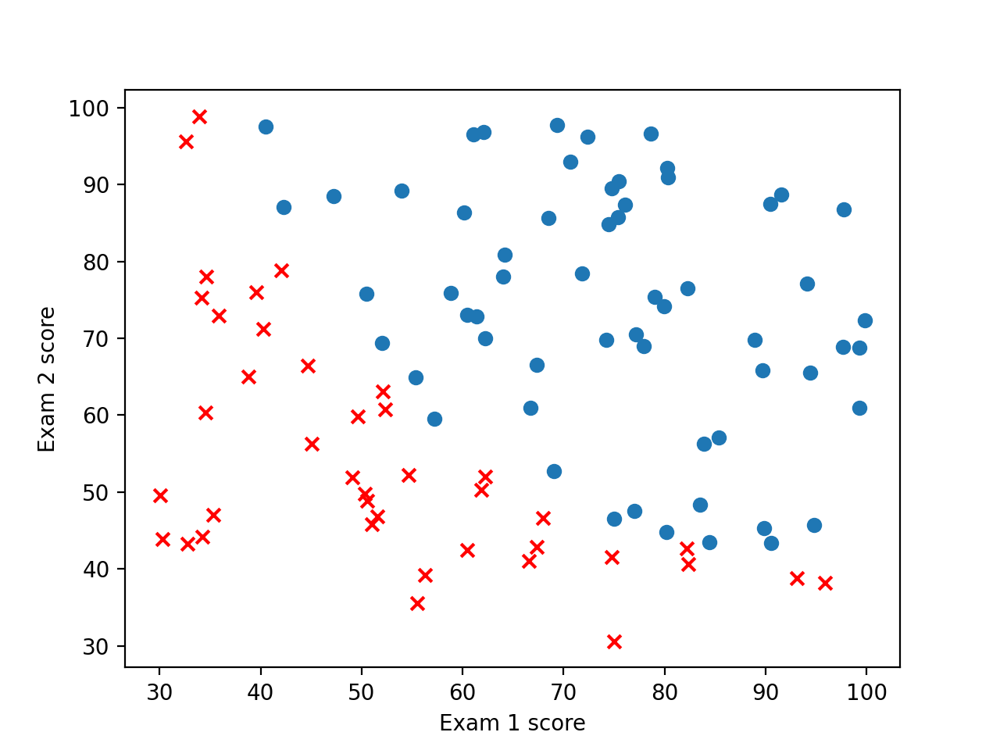
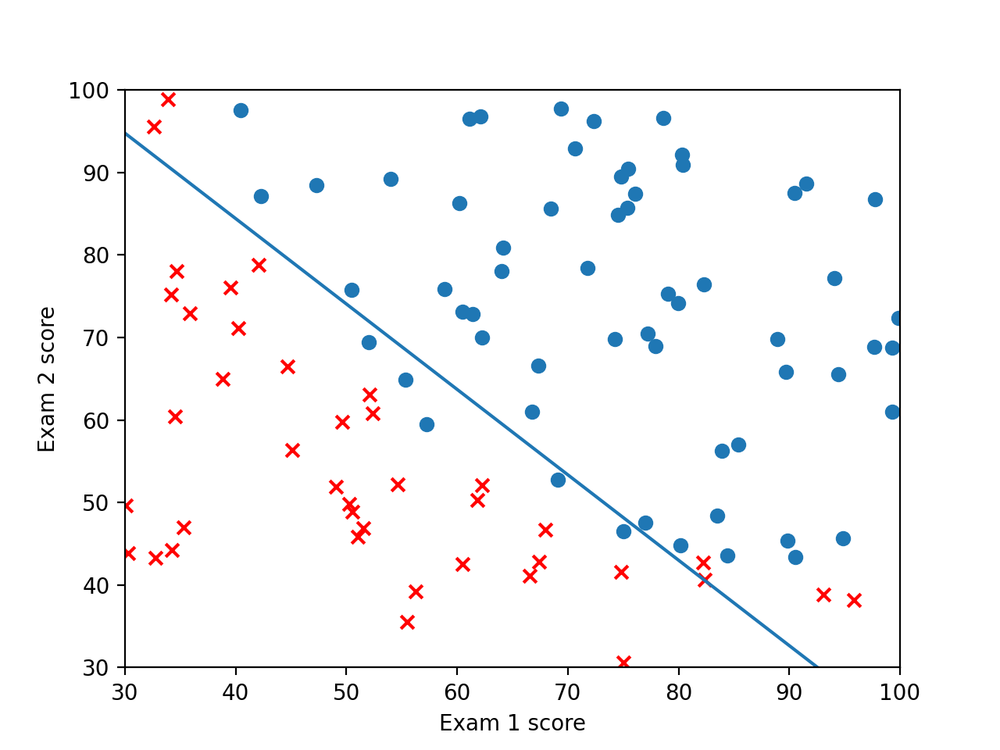
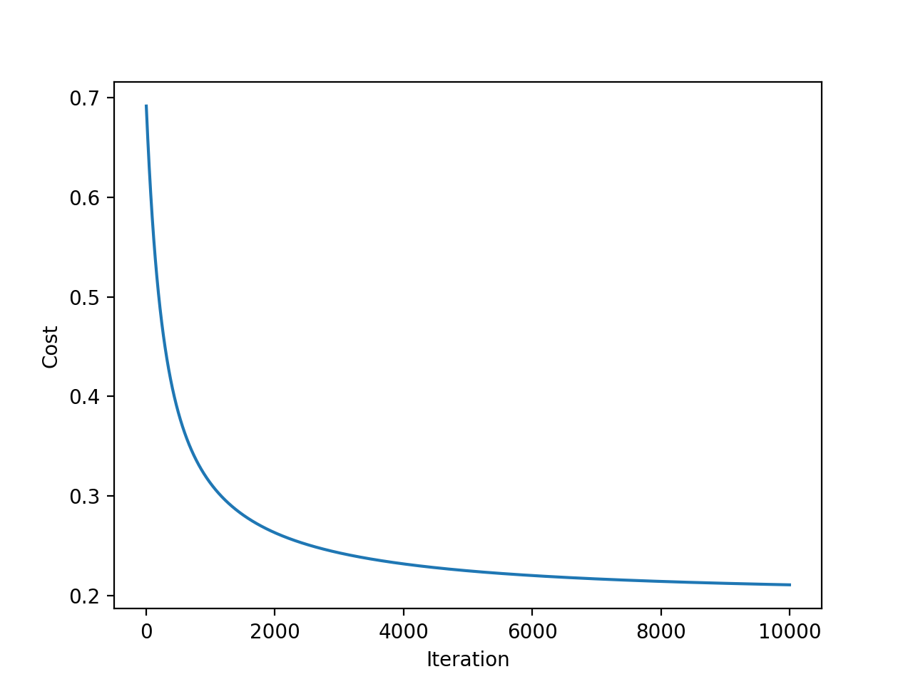

[吴恩达机器学习]4·逻辑回归之二分类
吴恩达机器学习系列课程：https://www.bilibili.com/video/BV164411b7dx
二分类问题与逻辑回归的引入
给定数据集： \[ \left\{\left(x^{(i)},y^{(i)}\right),\;i=1,2,\cdots,m\right\} \] 其中 \(x^{(i)}\) 是一个 \(n\) 维向量 \(\left(x_0^{(i)},\cdots,x_n^{(i)}\right)^T\)，且 \(y^{(i)}\in\{0,1\}\)，也即是对于输入 \(x^{(i)}\)，我们将其分类为 \(0\) 或 \(1\) 两类。试用一模型拟合该分类结果。
鉴于 \(y\) 取值的离散性，线性回归在这里不好使了，我们引入逻辑回归的概念。
回忆线性回归的假设函数：\(h_\theta(x)=\theta^Tx\)，我们在其外套上 \(\text{sigmoid}\) 函数，构造逻辑回归的假设函数为： \[ h_\theta(x)=g\left(\theta^Tx\right)=\frac{1}{1+e^{-\theta^T x}} \]
\(\text{sigmoid}\) 函数： \[ g(z)=\frac{1}{1+e^{-z}} \] 是一个介于 \((0,1)\) 之间的单增 \(S\) 形函数。
也就是说，对于一个参数为 \(\theta\) 的逻辑回归模型，输入 \(x\)，得到 \(h_\theta(x)=\frac{1}{1+e^{-\theta^Tx}}\) 的预测。我们可以把这个值视为 \(x\) 这组数据对应的 \(y\) 等于 \(1\) 的概率，如果它 \(\geqslant 0.5\)，则分类为 \(1\)，否则分类为 \(0\).
又根据 \(\text{sigmoid}\) 函数的性质，\(h_\theta(x)\geqslant 0.5\iff \theta^Tx\geqslant0\). 所以只要 \(\theta^Tx\geqslant0\)，就分类为 \(1\)，否则分类为 \(0\)；于是乎，\(\theta^Tx=0\) 这条线（超平面）被称作决策边界，它将整个空间划分成两块，各自属于一个分类。
代价函数
现在，我们的任务就是从数据集中求解逻辑回归的参数 \(\theta\). 仍然采用代价函数的思想——找到使代价最小的参数即可。
广义上来讲，代价函数是这样的一个函数： \[ J(\theta)=\frac{1}{m}\sum_{i=1}^m\text{Cost}\left(h_\theta(x^{(i)}),y^{(i)}\right) \] 也就是说用每个数据的估计值 \(h_\theta(x^{(i)})\) 和真实值 \(y^{(i)}\) 计算一个代价 \(\text{Cost}\left(h_\theta(x^{(i)}),y^{(i)}\right)\)，比如线性回归中这个代价就是二者差值的平方。
具体到逻辑回归里，这个代价定义为： \[ \begin{align} \text{Cost}\left(h_\theta(x),y\right)&=\begin{cases}-\ln(h_\theta(x))&y=1\\-\ln(1-h_\theta(x))&y=0\end{cases}\\ &=-y\ln(h_\theta(x))-(1-y)\ln(1-h_\theta(x))\\ &=y\ln\left(1+e^{-\theta^Tx}\right)+(1-y)\ln\left(1+e^{\theta^Tx}\right) \end{align} \]
上式的来源：
前文已经提到，\(h_\theta(x)=\mathbb P(y=1)\)，于是 \(1-h_\theta(x)=\mathbb P(y=0)\)，故： \[ \mathbb P(y=k)=[h_\theta(x)]^k[1-h_\theta(x)]^{1-k},\quad k\in\{0,1\} \] 考虑极大似然法，在数据集 \(\left\{\left(x^{(i)},y^{(i)}\right),\;i=1,2,\cdots,m\right\}\) 下，似然函数为： \[ L(\theta)=\prod_{i=1}^m\mathbb P\left(y=y^{(i)}\right)=\prod_{i=1}^m\left[h_\theta(x^{(i)})\right]^{y^{(i)}}\left[1-h_\theta(x^{(i)})\right]^{1-y^{(i)}} \] 取对数得到： \[ \ln L(\theta)=\sum_{i=1}^my^{(i)}\ln(h_\theta(x^{(i)}))+(1-y^{(i)})\ln(1-h_\theta(x^{(i)})) \] 注意到，极大似然法的目标是找到 \(L(\theta)\) 或 \(\ln L(\theta)\) 的极大值，而逻辑回归的目标是找到 \(J(\theta)\) 的极小值，所以自然的，我们直接使用 \(\ln L(\theta)\) 来定义 \(J(\theta)\)： \[ J(\theta)=-\frac{1}{m}\ln L(\theta) \] 这个 \(\frac{1}{m}\) 对极大值/极小值没有影响，仅是取一下平均罢了。
换句话说，逻辑回归的本质是拟合 \(y\) 取值的概率，并以极大似然法解之。
梯度下降解逻辑回归
我们对逻辑回归定义的代价函数是非常好的：它是一个凸函数。这有助于我们进行梯度下降求解。
为了求偏导，我们先计算： \[ \begin{align} \frac{\partial}{\partial\theta}\text{Cost}(h_\theta(x), y)&=\frac{\partial}{\partial \theta}\left[y\ln\left(1+e^{-\theta^Tx}\right)+(1-y)\ln\left(1+e^{\theta^Tx}\right)\right]\\ &=\frac{-yxe^{-\theta^Tx}}{1+e^{-\theta^Tx}}+\frac{(1-y)xe^{\theta^T x}}{1+e^{\theta^T x}}\\ &=\frac{-yx+(1-y)xe^{\theta^Tx}}{1+e^{\theta^Tx}}\\ &=\left(-y+\frac{1}{1+e^{-\theta^Tx}}\right)x\\ &=(h_\theta(x)-y)x \end{align} \] 于是乎， \[ \frac{\partial J}{\partial\theta}=\frac{1}{m}\sum_{i=1}^m\left(h_\theta(x^{(i)})-y^{(i)}\right)x^{(i)} \] 没错，这个偏导的形式和线性回归的偏导形式完全相同！不同的只是 \(h_\theta(x)\) 的定义——逻辑回归的假设函数在线性回归的假设函数外套了一层 \(\text{sigmoid}\) 函数，也正是这一层 \(\text{sigmoid}\) 函数，让我们不能像线性回归那样直接给出解析解，而必须使用梯度下降等方法。
现在我们对其使用梯度下降即可。
实现
首先看一下数据的散点图：

python 实现逻辑回归如下：
1 | |
在学习率为 \(0.01\) 下迭代了 \(10000\) 次，结果为：\(\theta=(1.2677702,\,3.05550587,\,2.81891901)^T\)，此时 \(J(\theta)=0.21065763610049573\). 决策边界的图像为：

\(J(\theta)\) 随迭代次数收敛情况如下：
